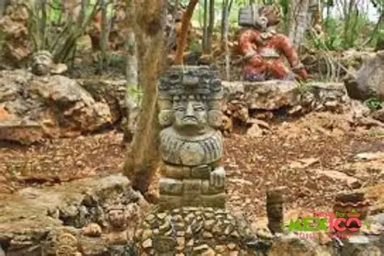

En las selvas del Maya, bajo la sombra de las selvas y el susurro de los cenotes, habitan los Aluxes. Según la tradición maya, estos seres son pequeños guardianes de la naturaleza, similares a duendes, creados a partir de barro y rituales sagrados por los antiguos chamanes o "h-men".
Se dice que para dar vida a un Alux, el creador debía moldear su figura con tierra de una cueva y ofrecerle ofrendas durante siete años. Una vez despiertos, estos seres juran lealtad a su dueño y a la milpa, protegiendo las cosechas de ladrones y animales. Sin embargo, su carácter es travieso y voluble: si se les olvida alimentarlos o se les falta al respeto, pueden lanzar pedradas o causar enfermedades a través de "vientos" malignos.
Muchos campesinos en Yucatán y Quintana Roo aún construyen pequeñas casas de piedra en sus terrenos para los Aluxes. Incluso en grandes obras de ingeniería moderna, como puentes y aeropuertos, se han levantado altares en su honor después de que accidentes inexplicables detuvieran las construcciones, demostrando que estos guardianes prehispánicos siguen reclamando su lugar en el mundo actual.
Si alguna vez caminas por la selva y escuchas risas donde no hay nadie, o encuentras objetos movidos de lugar, ten cuidado. Lo más recomendable es dejar una pequeña ofrenda de miel o maíz, y pedir permiso para cruzar su territorio, pues un Alux ofendido puede ser el inicio de una larga racha de mala suerte.